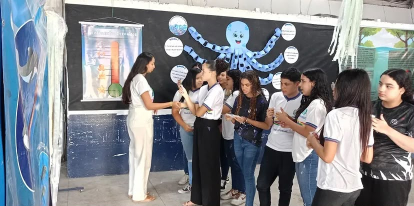
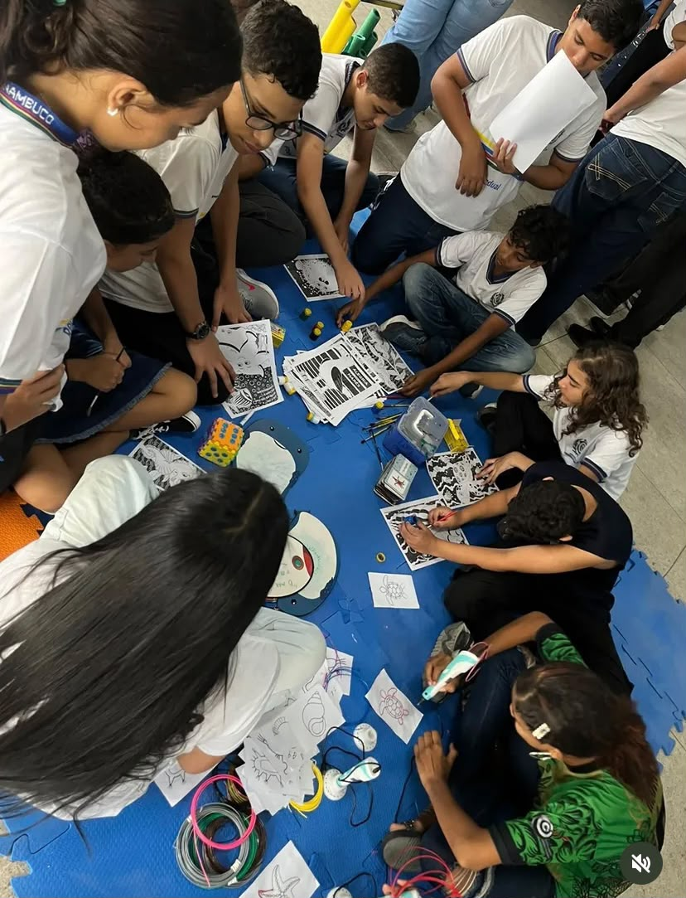
Ensino
Formação e compartilhamento de conhecimentos científicos e socioambientais.
Trabalhamos em ambientes marinhos e estuarinos nas vertentes de ensino, pesquisa e extensão.
O LEMS atua de forma integrada em ensino, pesquisa e extensão, com foco nos ecossistemas marinhos e estuarinos e na meiofauna, conectando ciência, educação e sociedade.


Formação e compartilhamento de conhecimentos científicos e socioambientais.
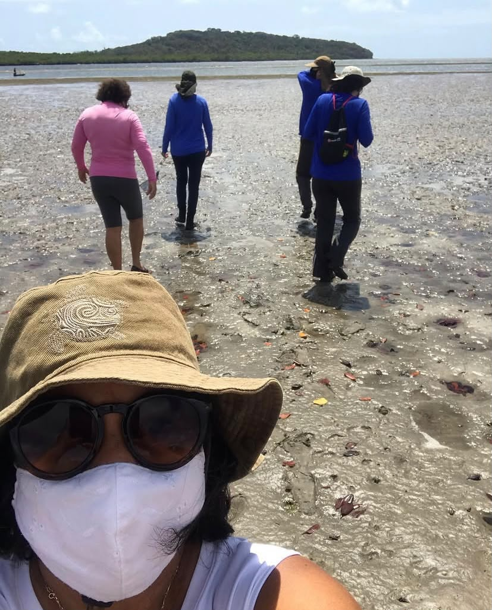
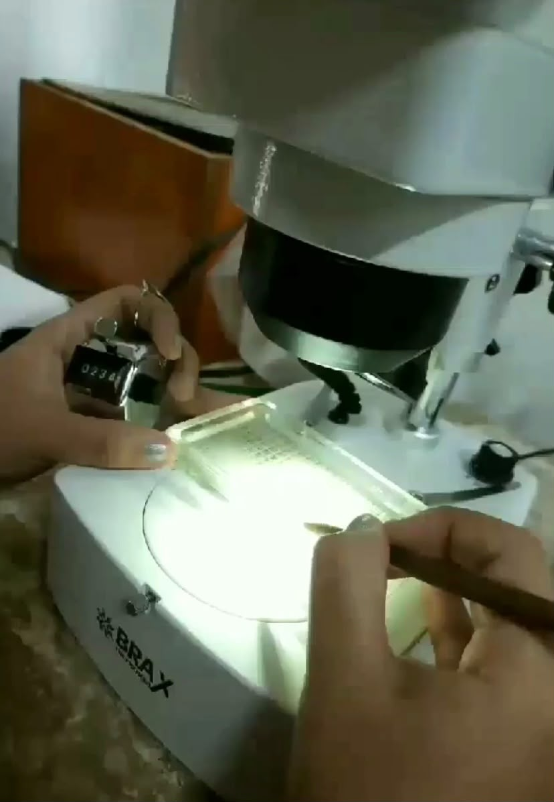
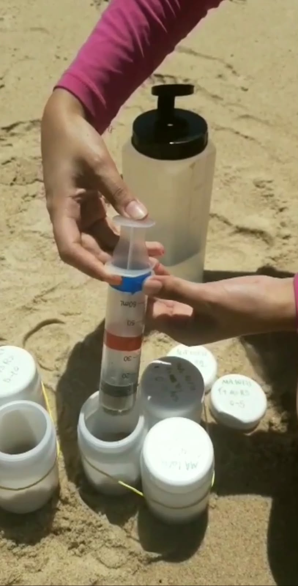
Estudos relacionados à ecologia da meiofauna e aos ambientes marinhos e estuarinos.
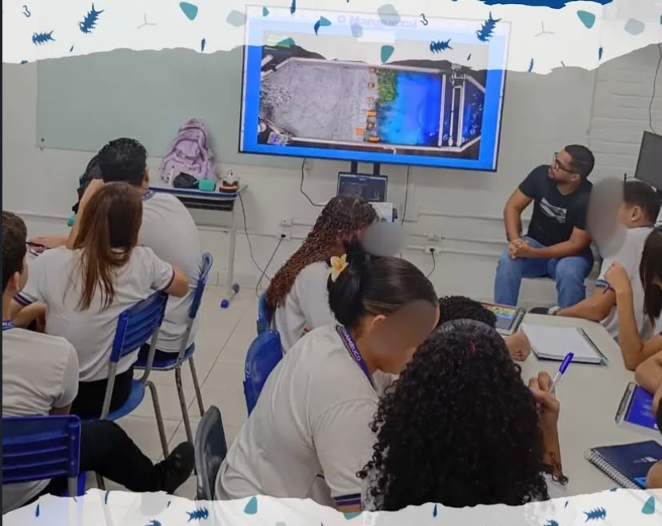

Ações educativas, divulgação científica e aproximação entre universidade e sociedade.
Mergulhe em pesquisas, relatos e experiências sobre os ambientes costeiros e estuarinos.
Materiais educativos do LEMS para explorar a biodiversidade e aprender mais sobre os ambientes marinhos e estuarinos.
Conheça projetos e organizações que trabalham com conservação, educação ambiental e valorização dos ambientes marinhos e costeiros.
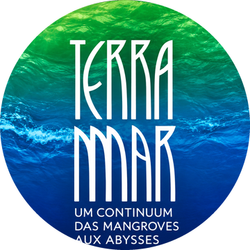
Projeto voltado à conexão entre as pessoas, o oceano e a conservação ambiental.
Conheça Terra Mar (abre em nova aba)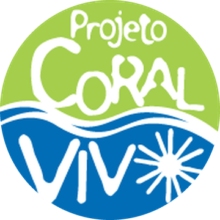
Projeto dedicado à pesquisa, conservação e educação sobre os recifes de coral brasileiros.
Conheça Coral Vivo (abre em nova aba)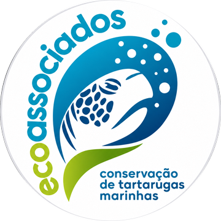
Organização que atua na conservação dos ecossistemas costeiros e marinhos, promovendo ações de educação ambiental e preservação da biodiversidade.
Conheça Ecoassociados (abre em nova aba)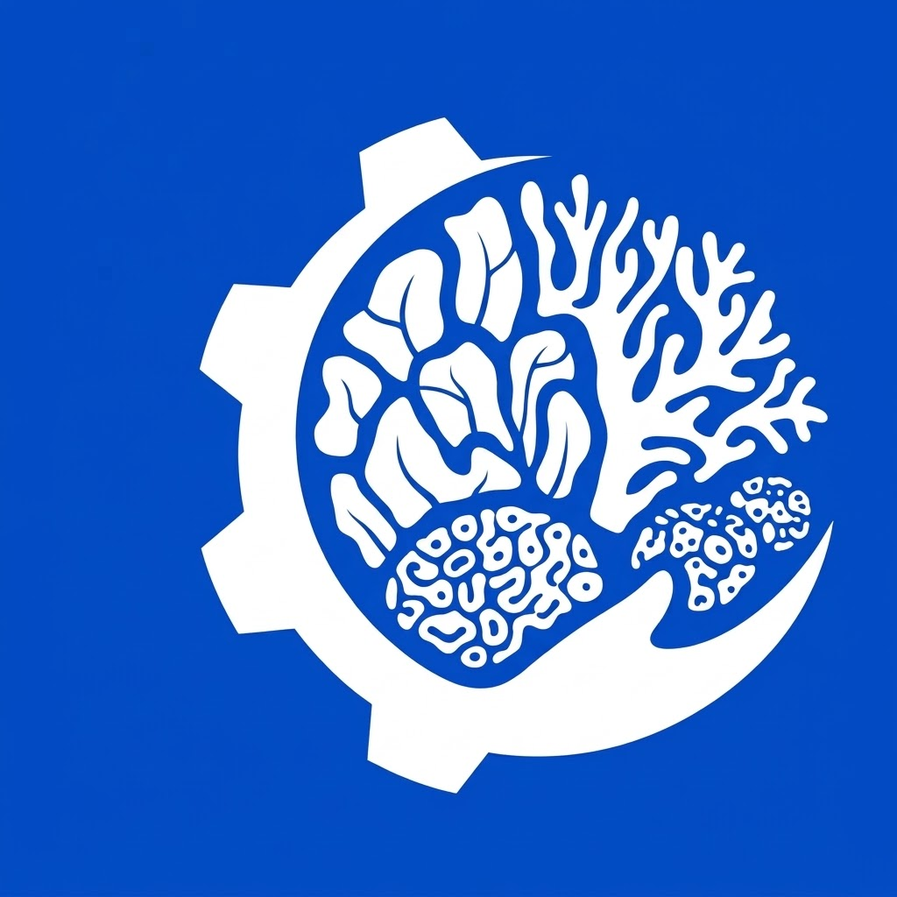
Startup de biotecnologia dedicada à restauração dos recifes de corais no Brasil.
Conheça Biofábrica de Corais (abre em nova aba)Helen Khoury: apoio à difusão e à popularização da ciência
Oceano sem mistérios: popularização da cultura oceânica em espaços educativos do litoral ao sertão
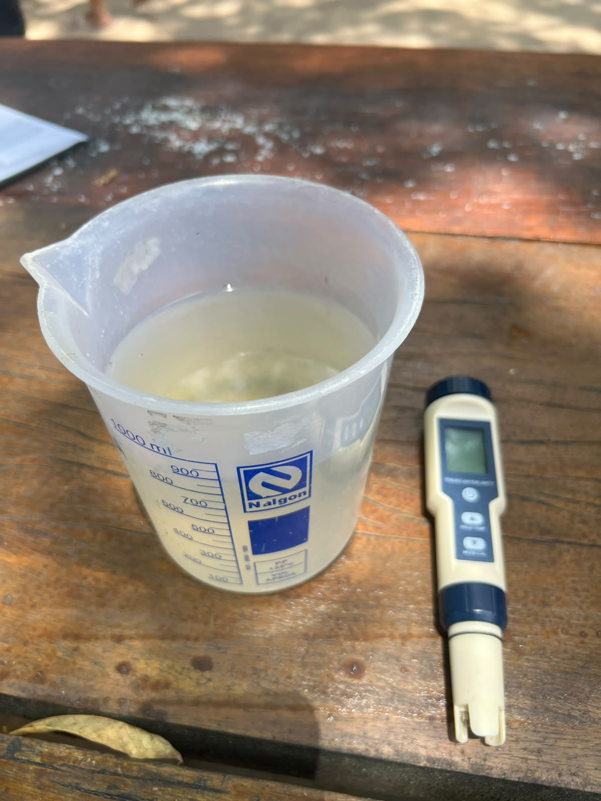
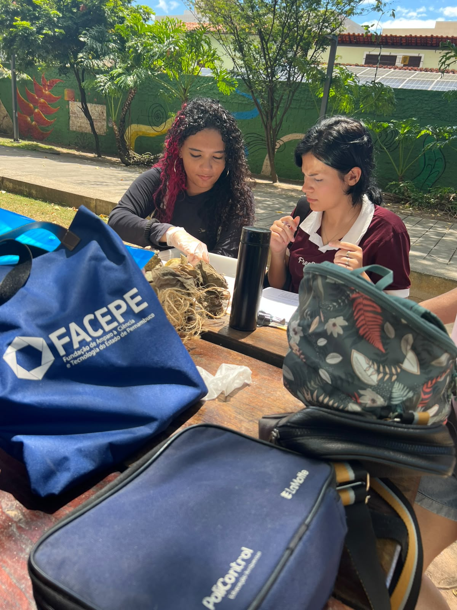
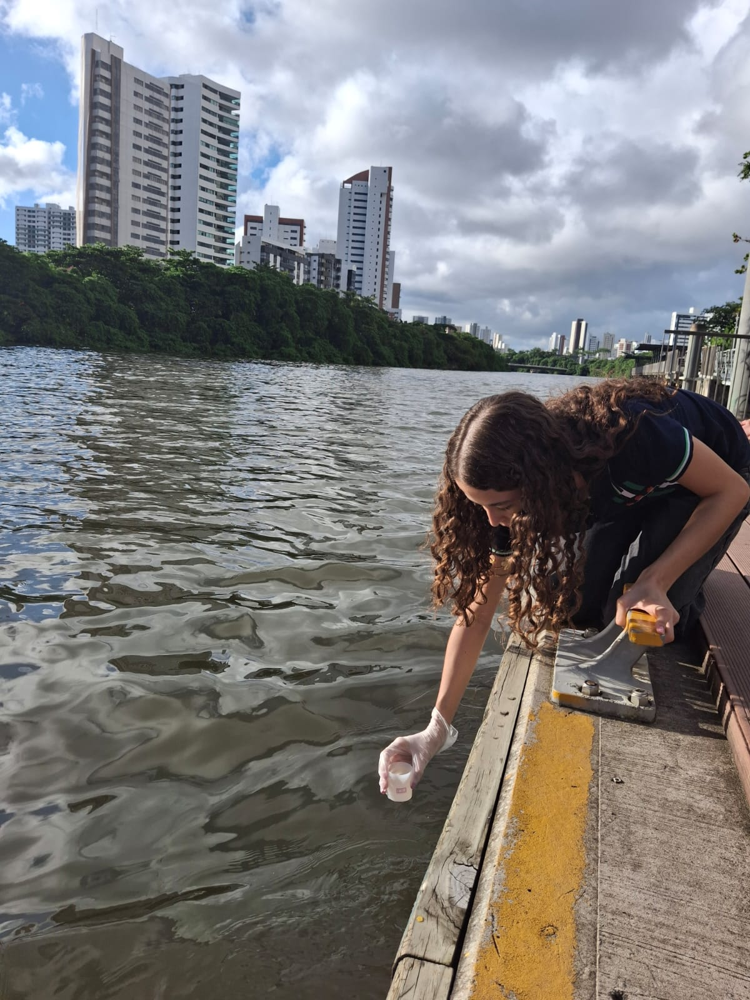
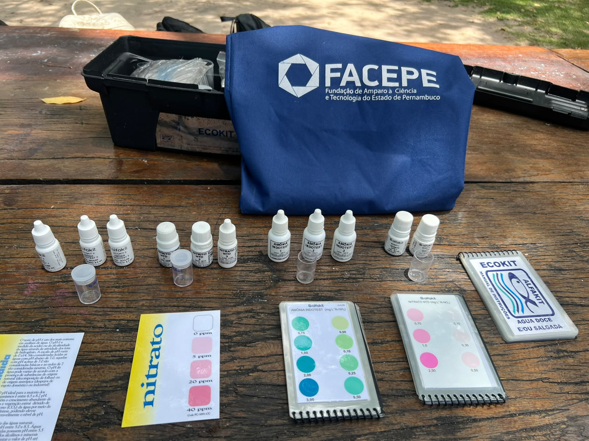
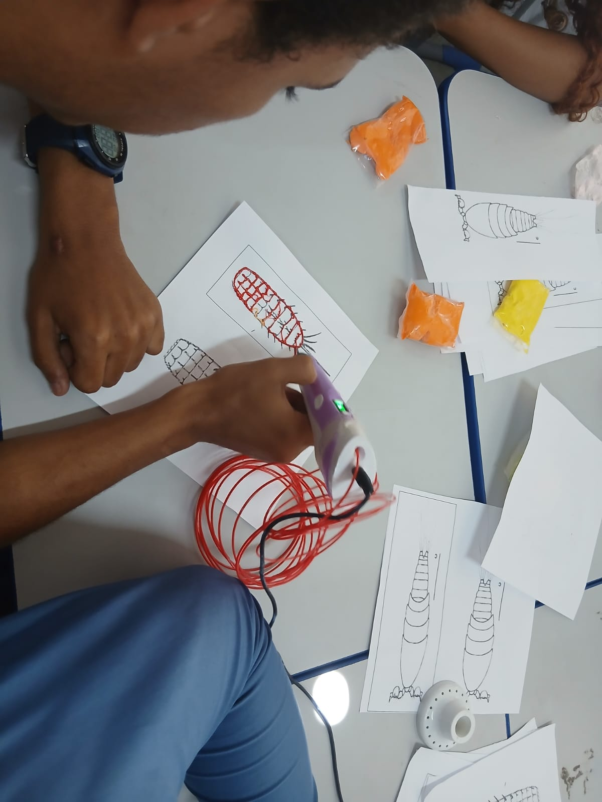
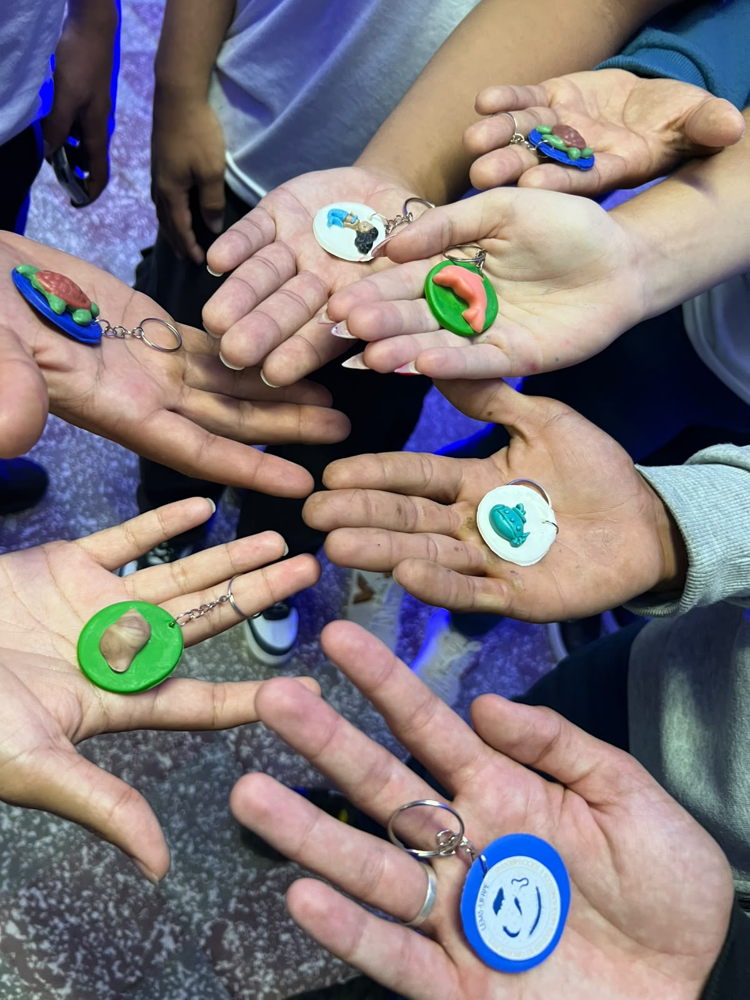
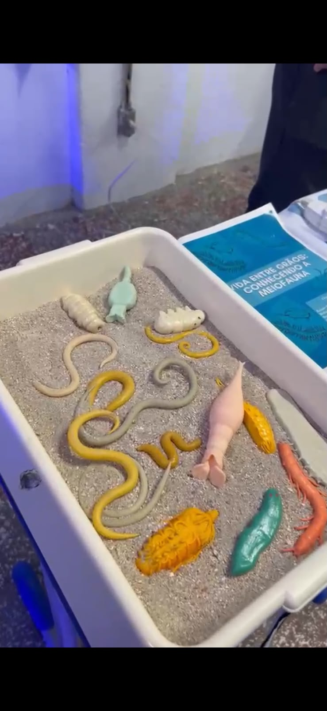
Teste seus conhecimentos sobre o oceano, manguezais e ambientes estuarinos.
Responder o Quiz (abre em nova aba)